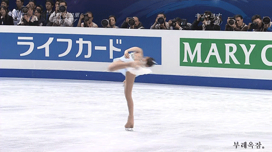

스핀
스핀은 제자리에서 회전하는 기술로서 선 채로 회전하는 업라이트 스핀(upright spin), 한쪽 발을 축으로 하여 앉아서 회전하는 시트 스핀(sit spin), 한쪽 발로 서서 몸을 'T' 자 모양으로 만든 뒤 회전하는 카멜 스핀(camel spin) 의 3가지로 구별된다.

① 업라이트 스핀
두발을 빙판에 두고 회전하는 기본 양발 스핀과 한쪽 발을 빙판에 두고 회전하는
기본 한 발 스핀, 빙판에 둔 발의 앞에 나머지 떠 있는 발을 교차시키며 회전하는
스크래치 스핀, 이와 유사하지만 떠 있는 발을 뒤로 하고 뒤쪽 방향의 아웃사이드
에지로 회전하는 백스크래치 스핀, 한쪽 다리를 거의 수직으로 끌어올려 영어의
'아이(I)'자 모양을 이루어 회전하는 'I스핀', 한쪽 다리를 머리
뒤쪽으로 끌어올려 손으로 잡고 회전하는 비엘만(bielmann) 스핀, 등을
뒤로 젖히고 떠 있는 한쪽 발을 뒤로 구부린 자세에서 양팔을 위로 뻗은
채 회전하는 레이백(layback) 스핀, 한쪽 발을 옆으로 뻗어 영어의 '와이(Y
)' 자 모양을 이루어 회전하는 'Y스핀' 등으로 세분된다.

② 시트 스핀
빙판에 놓인 발은 무릎을 굽히고 떠 있는 발은 앞을 향
하여 뻗은 채 회전하는 기본 동작을 비롯하여 회전하기 전에
점프를 하는 플라잉 시트 스핀, 떠 있는 다리를 몸쪽으로 하고 상체를 구
부려 팬케이크 모양을 한 채 회전하는 팬케이크 스핀, 떠 있는 다리를 엉덩
이 쪽으로 향한 채 회전하는 브로큰 레그 시트 스핀, 떠 있는 발을 빙판에
놓은 발 뒤로 교차한 채 회전하는 코크스크루(corkscrew) 시트 스핀, 떠 있는
다리를 빙판에 놓은 다리의 허벅지 위에 올리고 팔은 빙판에 놓인 다리를 눌러
캐논볼 모양을 한 채 회전하는 캐논볼 스핀 등 다양한 종류가 있다.
③ 카멜 스핀
떠 있는 발을 엉덩이 높이로 뒤로 뻗어서 수평을 이룬 자세에서 회전
하는 기본 동작을 비롯하여 점프를 도입한 플라잉 카멜 스핀, 회전하는
동안 몸을 위아래로 기울이는 일루전 스핀, 등을 뒤로 젖힌 상태에서 떠
있는 발의 스케이트날을 한팔 또는 양팔로 잡고 몸을 원 모양으로 만들어
회전하는 도넛 스핀, 공중에서 빙판과 평행을 이루는 자세로 다리를 교
차하고 양발을 비틀어서 도약하는 버터플라이 스핀 등의 기술로 세분
된다. 또한 김연아만의 독특한 기술이라 하여 그의 영어 이름에서 따
온 '유나(Yu na) 카멜 스핀'도 있는데, 'T' 자 모양으로 스핀을 도는
상태에서 한쪽 다리를 'ㄱ' 자 모양으로 접는 동작을 말한다.
